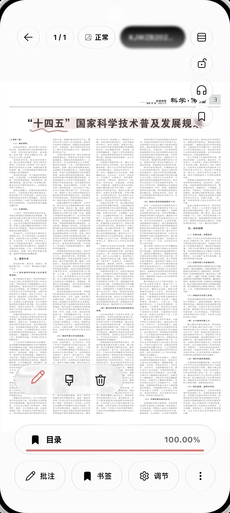
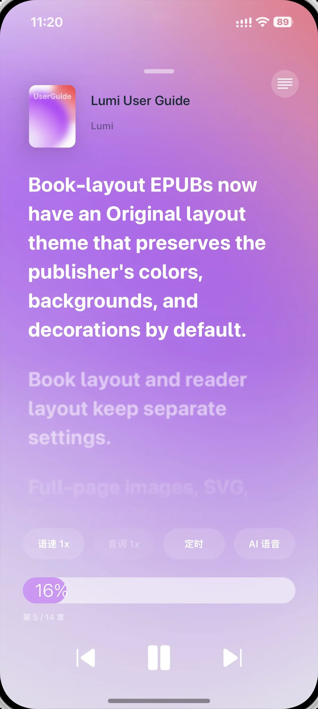
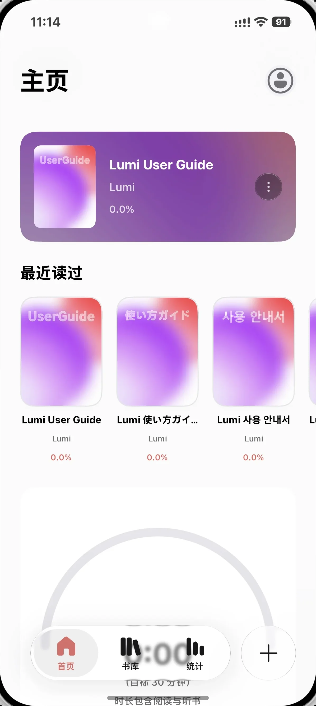
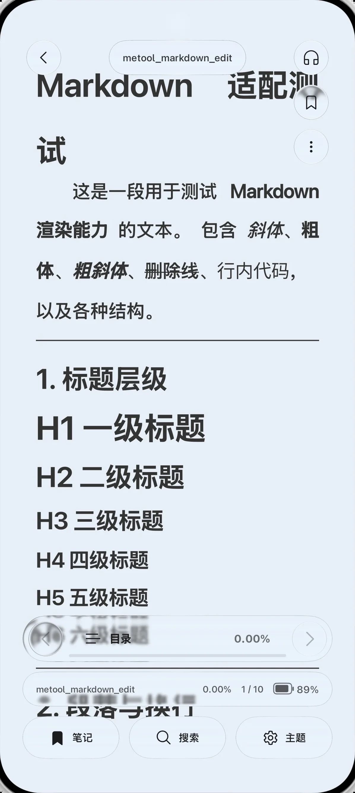
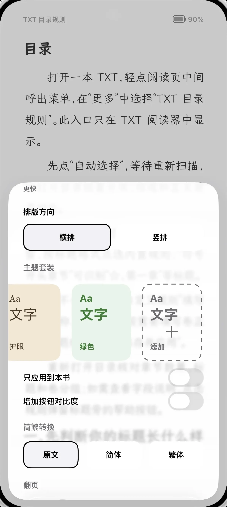

基础阅读一直免费
阅读、书架、主题、书签、笔记和多格式支持不设会员门槛。
读书这件小事，不必交给云端。Lumi 不需要账号，不追踪你的阅读，也不会把书架变成广告位。书籍、进度、笔记默认留在本机；需要同步时，连接你自己的 WebDAV。
在 Lumi 里，阅读有很多种样子
主题、字体、字号、行距、页边距和翻页方式，都可以慢慢调成喜欢的样子。
了解阅读设置 ›高亮、笔记、书签与标签，陪你重新找到那些打动过你的文字。
了解标注 ›
把摘录做成卡片分享，或将整本书的笔记导出，带回自己的工作流。
看看如何保存与导出 ›
全屏听书让章节、封面与字幕留在眼前；离开阅读页面后，悬浮字幕仍可陪你继续听。
进入听书场景 ›
一间自己的书房
浅色、深色与多种阅读主题，书架、桌面小组件与 Markdown 原生阅读。




从一本书开始
需要时就在手边，不需要时不打扰。Lumi 把细节放进阅读的每个步骤。

属于所有读者的 Lumi
基础阅读免费、开源、无广告；官方版提供可选的阅读报告、高级摘录与更多整理工具。不开通也能安心读完一本书。
阅读、书架、主题、书签、笔记和多格式支持不设会员门槛。
官方版的报告、标签管理和高级摘录，解锁前保留功能预览。
自行编译和审查公共版本，Premium 与基础版数据保持兼容。